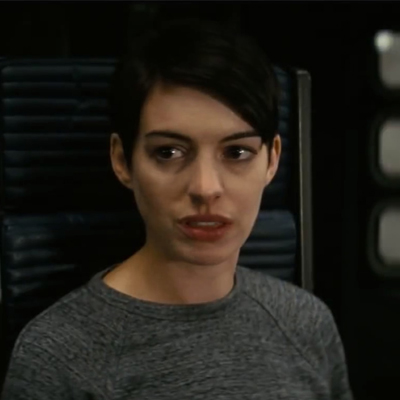
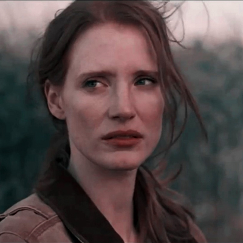
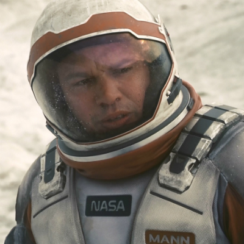
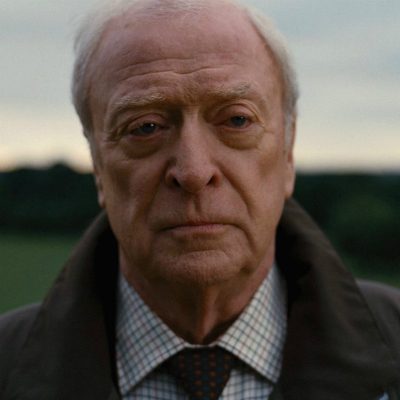
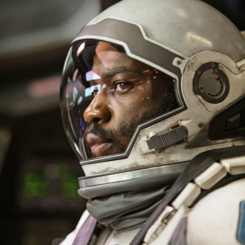

Joe Cooper was born in...
Amelia Brand was born...
Murphy Cooper was born...
Dr. Mann was a brilliant...
Professor John Brand was...
Nikolai Romilly was born...
Joe Cooper was born in Dalhart, Texas in the year 2030. He spent his childhood in a series of traumatic events of famine of nations against each other. He was a very bright student with an interest in space travel and engineering while at the University of Colorado in Denver.